双周备忘录
本轮工作总览与主要修改
本轮围绕“四大客户的财报质量、市场认可及价格溢价分别来自审计服务、认证还是客户选择”整合已有证据。数据上完成了公告时点实际EPS回补：对已核实的3,353个公司年应用首次年报公告时市场看到的数值，其中1,751个EPS改变、180天消息分组改变136个，相关市场分析已重跑。即使首次披露的数字后来被认定有误，也使用当时尚未更正的版本计算surprise。 市场端补齐了2012前后分组、共同模型和滚动图，完成未调整价格与含分红收益的口径核查、同样本控制变量对照、四组平均CAR及非平衡样本绘图；当前正文采用无额外控制的事件研究，ERC保留原有控制规格，另已完成−60至+60日的36套回归与24张图。分析师已更新为公告前后各180天的同券商配对结果，排序共同信息权重变化在四控后为正，人数项与窗口比较同步更新。供应链与分所扩张完成统一控制与行业×年份效应下的28套规格、84个二阶段系数。客户—事务所AKM统一了样本、事务所身份及失败指标口径，完成组内／组间分解、四大差距、逐观测KSS、未来配置诊断和Stata—Python核对。BLM拓展仍在进行中，目前尚未估计出可靠结果。客户长期发展新增市销率、市盈率估计，按各指标自身有效样本，估值倍数未呈现普遍上升。分组质量趋势、重述幅度与消息换组、说明会案例及时间分布均已整理为图表和对应材料。
2026-10-26 会议提纲：会议任务
本次按上次会议留下的九个任务逐项汇报。详细图表、口径和识别诊断已融入23号主报告；以下提纲链接直达对应正文。
1. 2012年前后的分组市场图
先看四大、本土八大与Other各自的消息响应，再检验组间差异。两段时期分别为2001—2011和2012—2024财年，2012年归入后期。好消息为surprise>10%，中性为−10%至10%，不含坏消息；实际EPS沿用已核实的原报修复口径，未核实记录保留数据库值。
短窗为公告前后[−5,+5]个市场交易日，以−1日为基期，Y为原始收盘价log。保留完整11日价格窗口，吸收公司×财年、事件日和实际交易日期固定效应，按公司×财年聚类，无额外控制。
1.1 7年滚动公告日响应：原受限规格对照
本轮未重估滚动窗口，以下两图仍来自共享事件日及日期FE的原受限共同模型，不属于新的完整交互主规格。
以下两图均从7年滚动共同回归中提取各审计组自身的“好消息−中性消息”公告日响应，不是只画组间差，也不是各组另做回归。Y为原始log price，样本为完整[-5,+5]的好消息与中性消息公告，−1日基期；公司×财年、事件日、实际交易日期固定效应，公司×财年聚类。


三组最早2001—2007与最晚2017—2023窗口的点估计为：四大：0.95%→0.27%；本土八大：0.33%→0.26%；Other：0.27%→0.07%（按100×log价格系数表示）。滚动点估计显示四大响应下降较多，其他组没有普遍上升。 这些结果描述跨窗口的市场响应变化，客观质量的逐年比较见下文。
1.2 组内响应：从完整交互共同模型提取
原分组组内方程保持不变；新共同模型把审计组×事件日、审计组×实际交易日期都放开：
\[ \ln P_{ifd}=\alpha_{if}+\delta_{g(if),k(ifd)}+\lambda_{g(if),d} +\sum_{g\in\mathcal G}\sum_{k\in\mathcal K}\beta_{gk}A^g_{if}Good_{if}D^k_{ifd} +\varepsilon_{ifd}. \]
Y为原始收盘价log，短窗[−5,+5]、−1日基期；公司×财年聚类，无控制。图画各组好消息−中性消息的系数，新共同模型的点估计及实际样本已与分别回归核对；共同模型采用统一协方差和自由度修正。长窗和ERC不变。
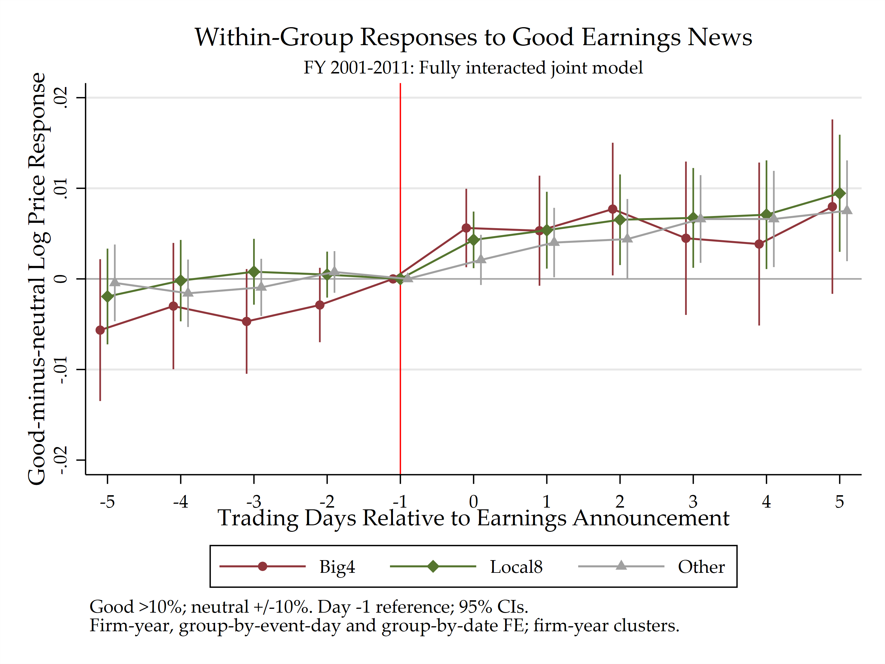
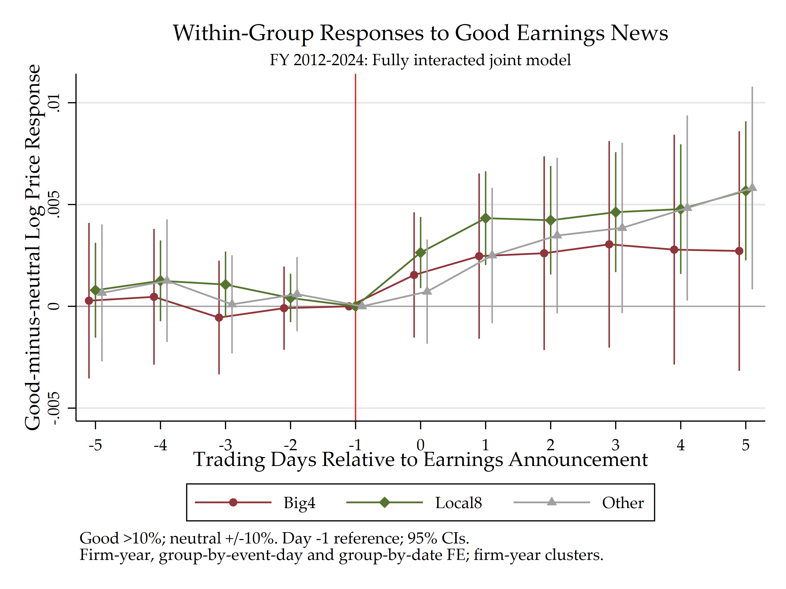
1.3 组间差异：同一模型的系数差
沿用上式，画四大−Other及本土八大−Other，置信区间使用同一模型的完整协方差；差值点估计与上面曲线的差严格对应。
\[ \Delta_k^{4-N}=\widehat\beta_{Big4,k}-\widehat\beta_{NonBig4,k},\qquad \Delta_k^{4-O}=\widehat\beta_{Big4,k}-\widehat\beta_{Other,k},\qquad \Delta_k^{8-O}=\widehat\beta_{Local8,k}-\widehat\beta_{Other,k}. \]
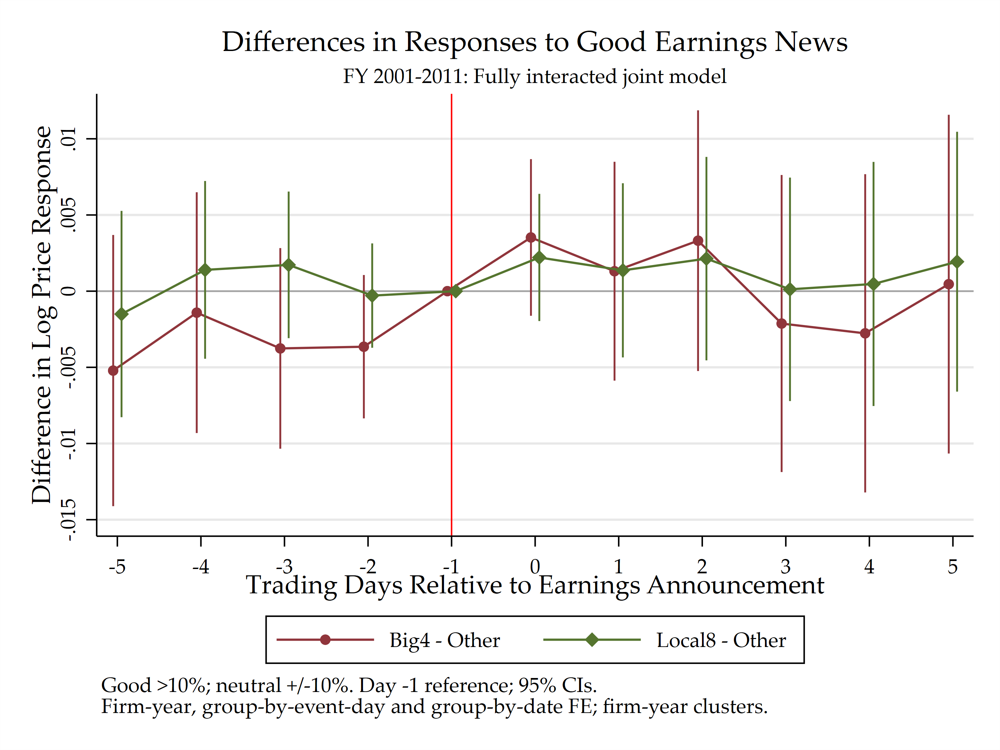
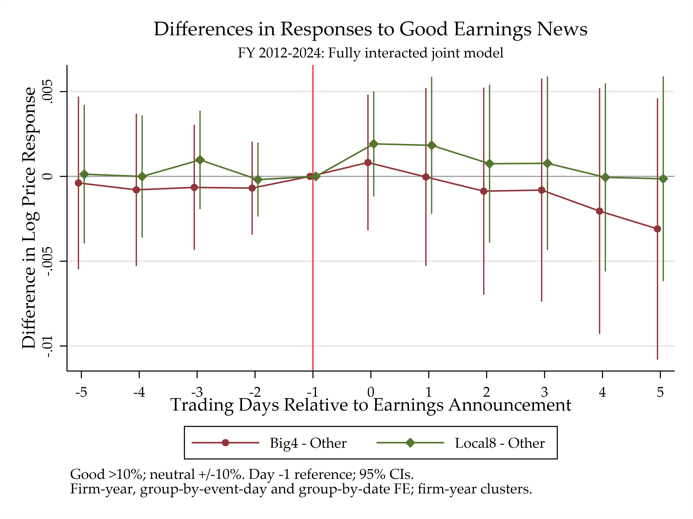
| 时期 | 比较 | 公告日系数（p） | +5日系数（p） | 事前联合p |
|---|---|---|---|---|
| 全样本：2001—2024财年 | 四大−非四大 | 0.000491（0.7352） | -0.002431（0.3927） | 0.4688 |
| 全样本：2001—2024财年 | 四大−Other | 0.001773（0.2782） | -0.002070（0.5185） | 0.6021 |
| 全样本：2001—2024财年 | 本土八大−Other | 0.002065（0.0959） | 0.000439（0.8577） | 0.3669 |
| 2012年前：2001—2011财年 | 四大−非四大 | 0.002658（0.2747） | -0.000297（0.9555） | 0.2187 |
| 2012年前：2001—2011财年 | 四大−Other | 0.003524（0.1790） | 0.000459（0.9356） | 0.1405 |
| 2012年前：2001—2011财年 | 本土八大−Other | 0.002211（0.2992） | 0.001933（0.6567） | 0.3099 |
| 2012年起：2012—2024财年 | 四大−非四大 | -0.000559（0.7465） | -0.003119（0.3480） | 0.9033 |
| 2012年起：2012—2024财年 | 四大−Other | 0.000819（0.6884） | -0.003093（0.4316） | 0.9868 |
| 2012年起：2012—2024财年 | 本土八大−Other | 0.001918（0.2250） | -0.000140（0.9637） | 0.6840 |
2012年前四大−Other的+5日差，新模型为0.000459（p=0.9356）；原受限式为0.009905（p=0.0277）。两者的中性消息基准和日期效应约束不同，不能把旧interaction当作原组内曲线的直接差。完整六模型及核对。
2. 短期、长期市场反应核查
长窗改用[−60,+60]个市场交易日，以−60日为基期，依次展示实际平均路径、三组分别回归和共同interaction。沿用当前好消息与中性消息公告队列，按既定缺日规则使用有效观测，不要求每份公告都有完整121日记录。
2.1 实际平均路径：差异在公告前还是公告后形成？
下面各图均有四条线：四大好消息、四大中性、非四大好消息、非四大中性。按公告等权平均，没有固定效应或控制调整；非四大合并本土八大与Other，置信区间按公司聚类。
含分红价格路径。 纵轴为含现金红利再投资可比价格相对−60日的log变动×100，不是未经调整的收盘价水平。


原基准CAR定义：全市场调整。 原描述性四路径图及既有组内回归、interaction图使用同一个全市场基准；下文另列的规模敏感性检验改用市值组基准，分别解释。个股日收益\(r^{TR}_{it}\)为含现金红利再投资总收益；市场日收益按前一市场交易日流通市值加权：
\[ r_{mt}=\frac{\sum_{i\in\mathcal M_t}MV^{float}_{i,t-1}r^{TR}_{it}} {\sum_{i\in\mathcal M_t}MV^{float}_{i,t-1}},\qquad AR_{it}=r^{TR}_{it}-r_{mt}. \]
\(\mathcal M_t\)为当日构造市场组合的有效股票集合，\(MV^{float}_{i,t-1}\)为前一市场交易日流通市值。这一定义不减去公司所在市值组收益；下文另列市值十分组调整的敏感性结果。
公告相对交易日记为\(k\)，长窗[−60,+60]以−60日归零：
\[ C_{i,-60}=0,\qquad C_{ik}=\sum_{j=-59}^{k}\left(r^{TR}_{ij}-r_{m,t(i,j)}\right),\quad k>-60. \]
CAR为日异常收益的算术累计，不是买入持有复合收益；图中乘100，以百分点表示。+60日终点包含公告前及公告初期收益，公告后新增变化需另比较−1→+60等区间。沿用已确认的缺日规则：个股日收益缺失记0，仍扣当日实际市场收益，不因个股缺日删除整份公告；这是一项计算假设，并非已逐日核实停牌。
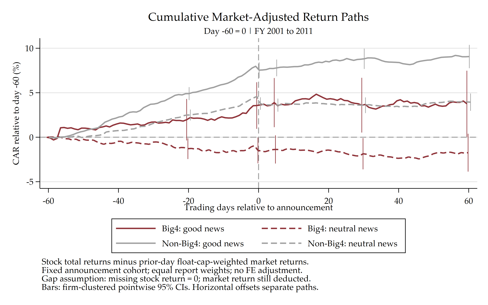
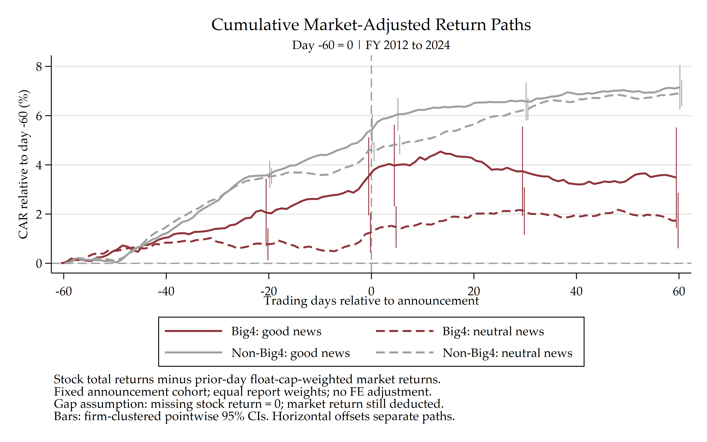
补充：市值组调整并剔除最小30%
为什么做这项规模检验？ Jianan Liu、Robert F. Stambaugh与Yu Yuan（2019），《Size and value in China》，发表于 Journal of Financial Economics 134(1):48–69。论文指出，中国最小30%的股票包含较高的潜在壳价值，收益与盈利意外的联系较弱、与IPO活动的联系较强，因此在构造因子时剔除最小30%（见作者接收稿第2页及第5.1节）。若四大与非四大客户的规模分布不同，全市场调整后的收益差可能同时反映规模及壳价值暴露。为检查这一竞争解释，这里改用公司所在市值十分组的收益作基准，并剔除公告年最小三组。检索词：Liu Stambaugh Yuan 2019 Size and value in China。
本次口径。 按自然年首个可用流通市值划分十组，按公告交易年份保留第4—10组，不将剩余公司重新分组；窗口跨年时按交易日当年所属组取基准。组内基准使用前一市场交易日流通市值加权的含分红总收益。令\(g(i,t)\)为当年组别，\(\mathcal V_{g,t}\)为基准中具有有效收益及前一市场交易日正流通市值的股票集合：
\[ \begin{aligned} r^{size}_{g,t}&=\frac{\sum_{j\in\mathcal V_{g,t}}MV^{float}_{j,t-1}r^{TR}_{jt}} {\sum_{j\in\mathcal V_{g,t}}MV^{float}_{j,t-1}},\\ C^{size}_{i,-60}&=0,\qquad C^{size}_{ik}=\sum_{s=-59}^{k}\left[r^{TR}_{i,s}-r^{size}_{g(i,t(i,s)),t(i,s)}\right]. \end{aligned} \]
原队列20,408份公告，剔除最小三组3,024份，另按确认排除两份在窗口内缺少当年组别的公告（000831的2012财年、601375的2016财年），最终保留17,382份。四条线各自的公告数、公司数在−60至+60的每个日期均固定；缺日个股收益记0、仍扣组收益。图为等公告权重的实际均值，无固定效应调整；好消息实线、中性虚线，仅画路径。分期按财年，纵轴为CAR百分点。
本次同时更换基准与筛选样本，用于检查原路径的规模敏感性；尚未分别识别两项调整的贡献。论文按月总市值构造CH-3，本次沿用年度流通市值十分组，不构造CH-3因子。
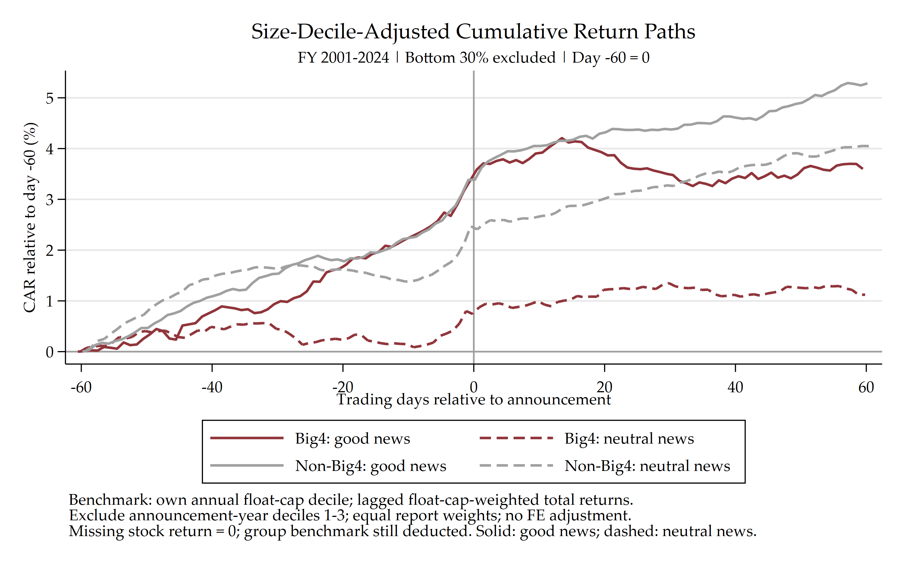
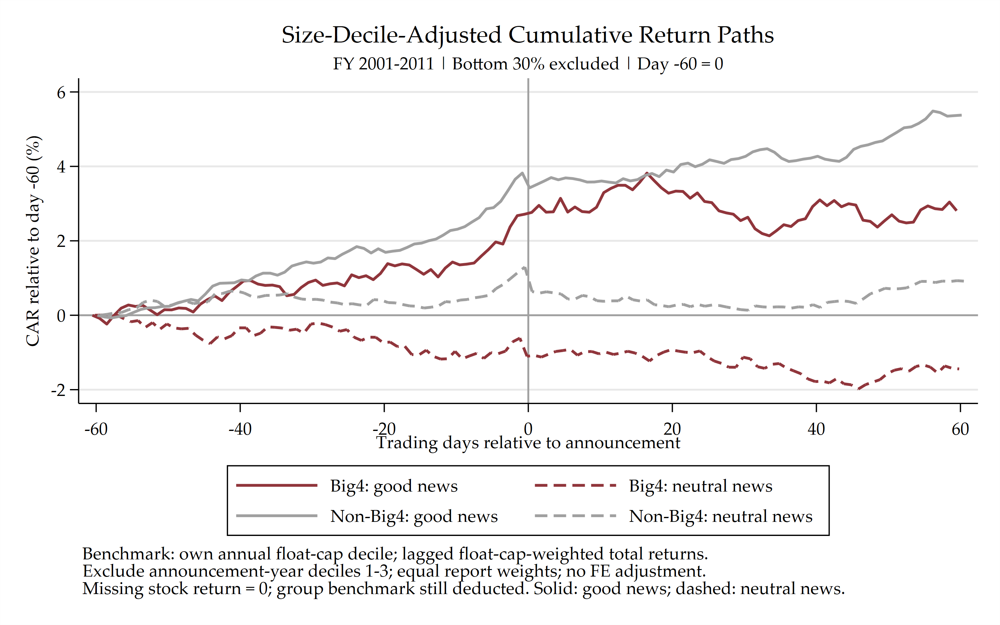
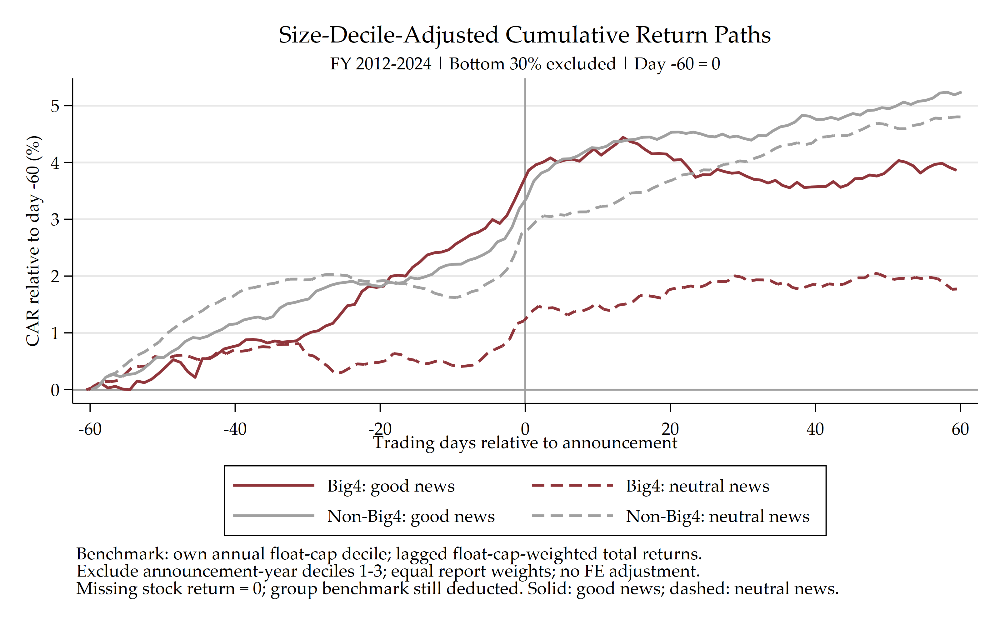
描述性结果。 2012年起，+60日四大好消息和中性组的平均CAR分别为3.86%、1.77%，非四大分别为5.24%、4.80%。这些数值累计自−60日，包含公告前形成的差异；图中未做组间差异显著性检验。
2.2 长窗event study：三组各自的好消息响应
接下来固定Y为CAR，分别在四大、本土八大与Other组内回归。曲线表示各组“好消息−中性消息”相对−60日的响应，纵轴为百分点；吸收公司×财年、事件日和实际交易日期固定效应，按公司×财年聚类，无额外控制。阴影为所有日期的逐点95%置信区间。


2.3 长窗interaction：三组的响应差异
在共同模型中直接报告“四大−Other”和“本土八大−Other”的CAR响应差，沿用中性消息各组共享路径的受限规格。样本队列、Y、固定效应和聚类与前面的长窗回归口径一致，区间使用组间系数差的完整协方差。


部分消息响应差异在正式年报前已经形成。由于长窗以−60日为基期，+60日终点包含公告前的路径，公告后新增变化应比较−1→+5、−1→+60或+5→+60的同模型系数差，不能仅凭累计终点判断信息吸收速度。当前证据未显示稳定的额外公告后四大长期溢价。
ERC另比较每单位连续盈利意外对应的公告期CAR斜率，与这些按消息分组的价格路径分别解释。长窗完整结果 · 公告后区间变化 · ERC。
3. 2012前后 audit outcomes、逐年趋势
三组逐年及前后比较已完成。Fin重述三组均上升、四大上升较少；Broad中四大下降更多。原始失败记录未显示一致的其他所追赶。
2012前后：三个未预警失败指标的发生率。 三个指标分别为“重述或违规”“Fin重述”和“违规”与MAO=0的联合事件；分母为各组全部审计意见样本中指标有效的公司年，2012年归入后期。
| 财年 | 事务所组 | 公司年N | 综合失败 | 重述（Fin） | 违规 |
|---|---|---|---|---|---|
| 2001—2011 | 四大 | 1,195 | 3.10% | 2.09% | 1.00% |
| 2001—2011 | 本土八大 | 5,719 | 7.01% | 4.41% | 2.90% |
| 2001—2011 | Other | 10,289 | 7.79% | 5.12% | 3.30% |
| 2001—2011 | 非四大 | 16,008 | 7.51% | 4.87% | 3.16% |
| 2012—2024 | 四大 | 3,403 | 4.58% | 3.79% | 1.41% |
| 2012—2024 | 本土八大 | 29,245 | 10.44% | 8.37% | 3.80% |
| 2012—2024 | Other | 16,903 | 13.46% | 10.76% | 5.46% |
| 2012—2024 | 非四大 | 46,148 | 11.55% | 9.24% | 4.41% |


4. 其他变好还是四大变差
客观质量与市场相对响应没有给出同一个趋同模式。Fin差距扩大，Broad中四大下降更多；市场响应还取决于消息比较、客户样本与模型约束。
市场端沿用上文两张无控制滚动分组图，与下表的质量变化分别解释。
| 事务所组 | Fin：2001—2011 | Fin：2012—2024 | Broad：2001—2011 | Broad：2012—2024 |
|---|---|---|---|---|
| 四大 | 2.34% | 4.11% | 12.97% | 8.49% |
| 本土八大 | 5.33% | 9.57% | 15.56% | 15.16% |
| Other | 6.13% | 13.44% | 18.71% | 18.60% |
5. 重述程度、是否改变盈余惊喜
严格重述已核实部分的净利润相对调整中位数4.72%；确认104／866（12.01%）改变消息分组，其中16个直接互换超预期／不及预期。原报恢复已接入正式信号并完成市场重跑，主要结果基本不变。
| 调整量 | 严格：中位数 | 严格：P90 | 严重：中位数 | 严重：P90 |
|---|---|---|---|---|
| 净利润绝对调整（万元） | 630.680 | 13,626.750 | 767.940 | 17,141.850 |
| EPS绝对调整（元／股） | 0.012 | 0.206 | 0.015 | 0.273 |
| 净利润相对调整幅度（%） | 4.72 | 83.36 | 5.70 | 86.72 |
| 当前数据分组 → 原报分组 | 不及预期 | 中性 | 超预期 | 合计 |
|---|---|---|---|---|
| 不及预期 | 273 | 68 | 14 | 355 |
| 中性 | 8 | 149 | 5 | 162 |
| 超预期 | 2 | 7 | 93 | 102 |
| 合计 | 283 | 224 | 112 | 619 |
6. 财报公布时不知道、一周后才知道什么
CSMAR问答记录提供了具体案例：财报公布后，投资者追问现金流、应收账款及盈利增长，公司在说明会上解释其业务和结算原因。下列三个早期案例均为现有好消息组的非四大客户，说明会在年报公告后3—6个自然日举行。
三个公告后一周内的说明会案例
苏宁电器002024—2006。 当年审计师为江苏天衡，Other；年报公告日为2007-03-10，说明会日期为2007-03-13，相隔3日。为什么经营现金流没有随收入增长？财务负责人解释新店投入、存货增长及支付供应商货款的资金占用。
皖通科技002331—2010。 当年审计师为天健正信，本土八大；年报公告日为2011-02-22，说明会日期为2011-02-25，相隔3日。为什么应收账款增长较快？财务总监解释收入增长，以及项目完工后尚未到期的缺陷责任期。
杭氧股份002430—2010。 当年审计师为天健，本土八大；年报公告日为2011-04-13，说明会日期为2011-04-19，相隔6日。营业收入约30亿元，销售收现约19亿元，应收仅增加不到2亿元，差额是什么？财务负责人解释部分采用银行承兑汇票结算，该部分票据业务不进入现金流量表。
这三个例子把“财报后市场还在了解什么”具体化了：投资者已经看到收入、利润和现金流数字，但仍在追问数字之间的关系、收款安排及增长带来的资金占用；说明会提供针对这些疑问的解释。 当前surprise分别为16.52%、11.28%和12.92%，均超过主报告的10%好消息门槛，三个事件也均有完整短窗行情。
以下为CSMAR原始问答重新排版的摘录表，保留提问与回答全文；图下注明原始Excel行号，便于回查。
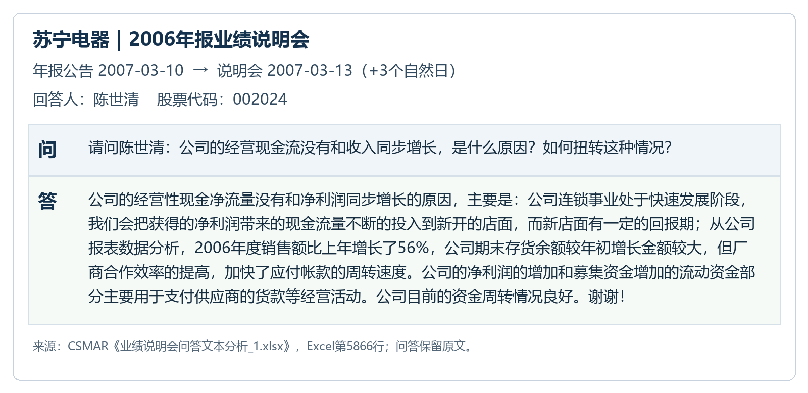
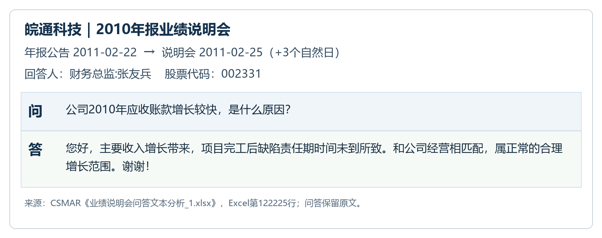
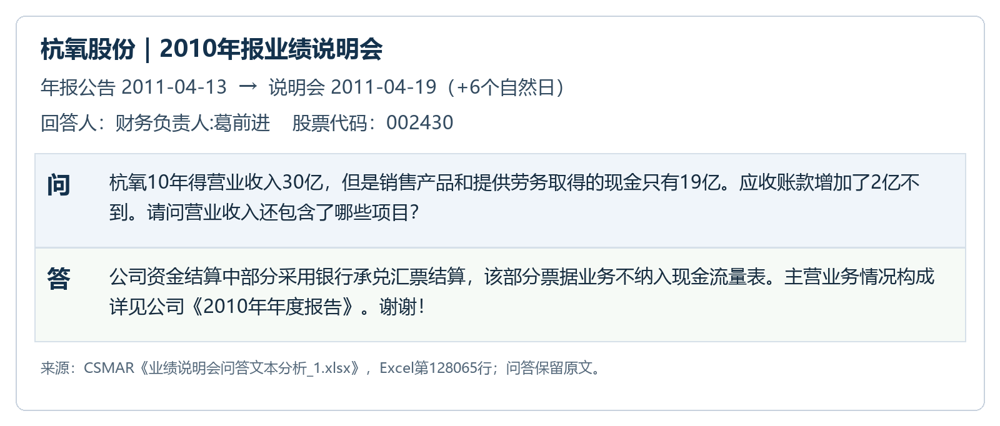
会议日期另见苏宁公司官网2007年报中的说明会记录、全景网皖通说明会当日报道及杭氧说明会通知记录。
补充：原始会议纪要截图——东方电气与通富微电
东方电气2010年报：公告后第1日解释应收账款。 年报于2011-03-31公告，4月1日在上海举行说明会。券商整理的纪要记录，投资者追问管理费用、所得税和应收账款；公司解释合同通常有约10%的质量保证金，期限为2年或5年，因而收入确认后仍形成应收款。第一创业2011-04-06会议纪要，第4页。
查看原始问答／纪要：东方电气：原始会议纪要第4页Q7截图，包含公司答复及券商观点。

通富微电2023年报：公告后第6日解释增收不增利。 年报公告日为2024-04-13，4月19日举行公开网上说明会。投资者问公司是否因价格竞争和议价能力不足而增收不增利；公司拆解需求、产能利用率和汇兑损失，说明汇兑损失减少归母净利润1.900亿元，并补充两家子公司的盈利表现。公司投资者关系活动记录，第6—7页。活动时间按记录首页的2024-04-19；纪要文件发布于4月24日。

说明会通常在年报后多久？
本次读取下载的三个Excel，共1,083,440条问答。按股票代码、数据所属会计年度和实际答复日期合并为活动日，再与正式年报公告日匹配；每份年报取公告当日至365个自然日内首次被数据记录的问答活动，不按问题条数重复计数。使用答复日期，是为了将提前征集问题与实际说明会交流区分开。有效样本为25,586份年报、4,794家公司，财年覆盖2005—2024。
总体中位数为公告后12个自然日，四分之一在7日内、四分之三在19日内。公告后第1—7日的占24.40%，包括公告当天则为25.70%；64.00%在两周内、87.20%在30日内。
| 样本 | 年报数 | 间隔中位数 | 第25—75百分位 | 公告后第1—7日 | 当日至第14日 | 当日至第30日 |
|---|---|---|---|---|---|---|
| 全部可匹配年报 | 25,586 | 12日 | 7—19日 | 24.40% | 64.00% | 87.20% |
| 2012年前财年 | 2,921 | 10日 | 7—16日 | 27.40% | 72.40% | 89.80% |
| 四大客户 | 1,438 | 13日 | 6—24日 | 24.10% | 55.70% | 80.60% |
| 非四大客户 | 24,148 | 12日 | 7—19日 | 24.40% | 64.40% | 87.60% |
| 非四大、好消息组 | 1,881 | 11日 | 7—17日 | 27.50% | 69.30% | 88.70% |
数据同时包含同一会计年度的多次问答活动，因此这里衡量“年报后首次被该库记录的问答活动”的间隔。2,337条缺失答复日期的问答不纳入时间统计。42,497个公司—年度—活动日中，35,758个能按代码和年度匹配年报；其中9,628个早于对应年报、36个晚于365日，另有6,739个未匹配，均保留在活动日明细中。组间数字是时间分布描述。
7. Expansion 剔除最大客户
已完成“本省／本省及邻省 × 保留／剔除事前最大客户”的四组采用一阶段比较，以下均使用截至2012年（含）的样本。事件日期沿用2026年10月23日校对后的版本，每张图左侧为TWFE、右侧为CS-DID。
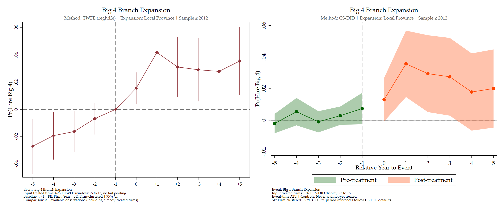
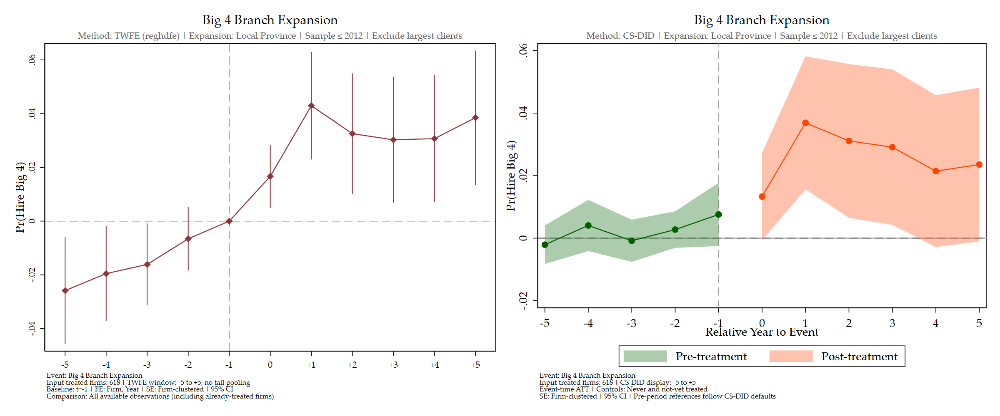
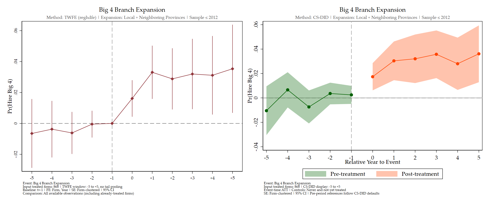
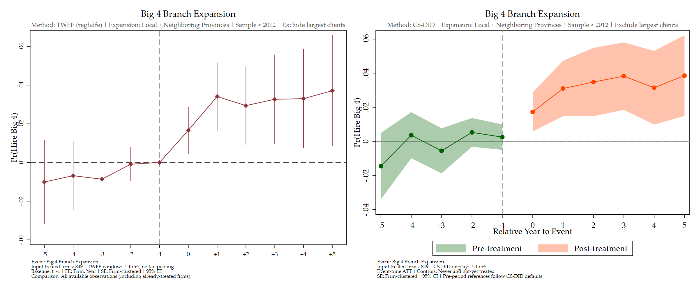
8. AKM：客户配置、估计噪声与风险择所
先以客户—事务所—A1审计师三维AKM作整体参照：原33资格综合失败的客户、事务所、审计师插件方差份额为31.40%、2.90%、15.00%。下面先聚焦客户—事务所两方的sorting和风险择所；三维份额不用于比较三者的因果重要性。三维框架与原图。
AKM允许长期客户类型与事务所稳定成分相关；当前结果是梯队间正向配置、梯队内负向配置。 客户—原始事务所—年份FE模型中，四大较低的观察失败率同时对应较低的客户成分与事务所成分。对同一次pooled估计按四大、本土八大和Other分解，三个失败指标、三套A1资格均呈组间正、组内负，组内负项更大。这里两个FE都按失败方向解释，较低客户成分与较低事务所成分在梯队之间相配。AKM设定与结果。
分项KSS说明估计噪声主要压低组内项；客户内持续冲击仍是纠偏条件。 公司年误差独立时，不筛选综合失败的组内协方差从−1.704变为−0.860、组间从+0.797变为+0.820，总体纠偏后为−0.040（均×10,000）。33和55的方向相同。实际网络模拟中，加入客户内持续冲击后，逐观测纠偏也可能把设定的正sorting估成负，因此剩余组内负项尚不直接解释为某种匹配机制。记录级检查在排除前期记录ID、间隔三年后，历史有已公告风险的客户后期新记录率仍为9.45%，对照5.59%，说明历史风险有预测信息。分项纠偏与具体条件。
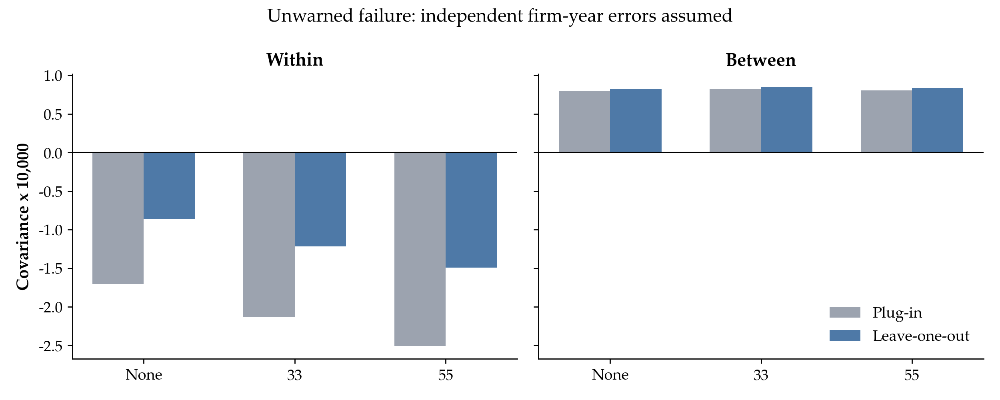
针对风险变化关联换所的问题，我参考 Bonhomme 等 (2019) 做了一个最小联合模型，作为AKM补充。 BLM先按企业工资分布分类雇主，再以劳动者流动与工资结果估计潜在类型；其动态模型进一步在Markov结构下容纳工资与流动的反馈。这里在五年窗口内，用客户上一年五项财务分布的45个CDF坐标，K-means将事务所分为四类，再用二元失败、真实换所和目的类别联合推断两类客户；上一年财务状态进入三个方程。Class是事务所类别，Type是客户潜在类型。窗口模型用签字后三年成熟追踪标签，与AKM回填报告年度的标签不同。实际模型公式。
第一项结果是客户类型构成，第二项是年度风险与换所。 2015—2019年四类事务所的较高平均预测失败概率客户Type 2占比为17.30%、29.90%、17.50%、3.40%，第4类全部为四大。改用不重叠结果后变为47.20%、55.00%、24.70%、4.30%，第4类仍最低、其他类的构成变化较大，且各模型重新推断类型。ROA从同年第25升至第75百分位，对应2015—2019年和2020—2024年预测换所概率下降4.06和3.04个百分点，100次客户重抽样范围分别为−5.42至−2.83、−4.04至−1.73个百分点；进入第4类的概率变化范围均跨0。该模型给出类型配对分布与风险相关流动，仍限制给定类型和财务状态后的未观测选择冲击。完整结果与读图说明。
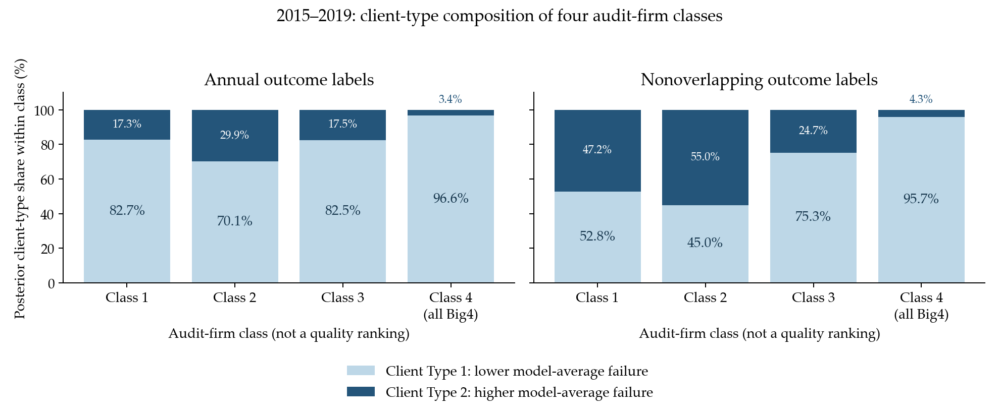
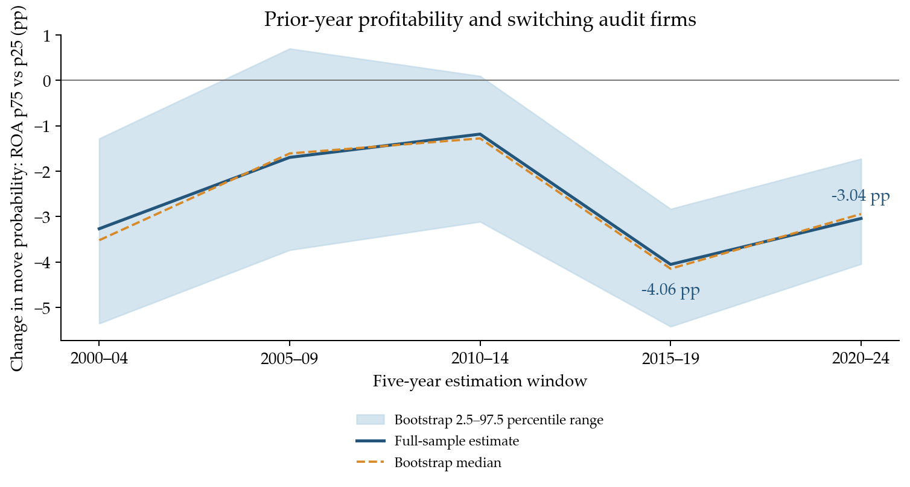
9. 分析师指标与人数
本次已将前后分析师预测都限制在180个自然日内。 对同一券商、同一个下一财年EPS，取公告前\([-180,-1]\)内最后一份、公告后\([+1,+180]\)内第一份，排除公告当天。有效样本13,707个公司年，四控样本9,977个；好坏消息均保留。回归控制盈余意外幅度、对数市值、市场账面比和配对券商数，无固定效应、公司聚类。
四大客户的共同信息相对依赖变化更高。 行业×财年排序\(\Delta\rho\)系数为0.021478（p=0.0177），对应变化量的分位秩高约2.15个百分点；原值四控0.014206（p=0.1333）。排序\(\Delta h\)和\(\Delta s\)分别为0.009462（p=0.3083）和0.005250（p=0.5569），均不显著。现有结果为财报认证机制提供补充证据，尚不能据此确认共同信息精度提高或私人信息下降。共同、私人信息及三个Δ系数的简明模型说明。

| Δρ的四大−非四大均值差分解（180天有效样本） | 数值（百分点） |
|---|---|
| 原始组间差异 | 1.148 |
| 显式1/n项对应部分 | 0.272 |
| 其余部分 | 0.876 |
固定两窗口共同事件后，四控样本为9,449个，180天排序\(\Delta\rho\)仍为正（0.018482，p=0.0460）。主结果与窗口比较 · 人数构造与已完成诊断。